театральная
драматургия
шрифта
Prata
№002011
Дата: 16.09.25
Время: 19:00
Ряд: 5
Место: 12
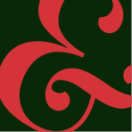
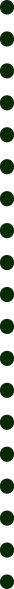
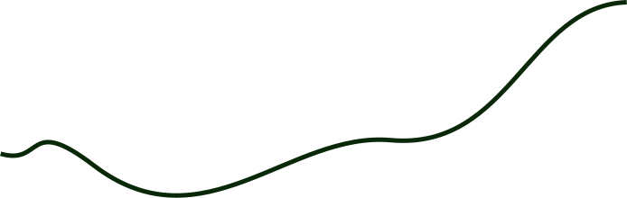
история
а.
засечка
Prata — контрастная антиква, созданная
Иваном Петровым для Cyreal. В основе Prata лежит
выразительное столкновение противоположностей:
тонких и массивных штрихов, острых треугольных засечек
и мягких каплевидных форм. Именно это сочетание
придает шрифту его узнаваемый характер и делает его
особенно выразительным в крупных кеглях и заголовках.
При этом выразительность Prata строится не только
на контрасте штрихов, но и на деталях, которые
раскрываются при внимательном рассмотрении.
Плавные изгибы, тонкие линии и характерные
окончания букв формируют собственный ритм,
в котором строгость сочетается с пластичностью.
В зависимости от масштаба и окружения шрифт
может звучать по-разному, сохраняя при этом свою
индивидуальность.
U
Y
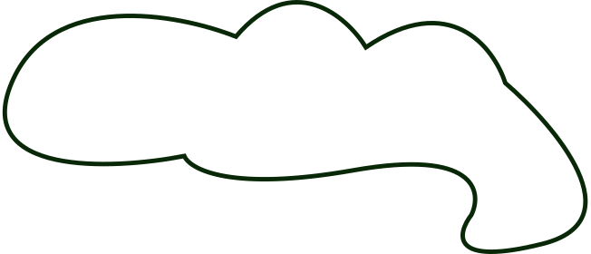
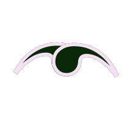
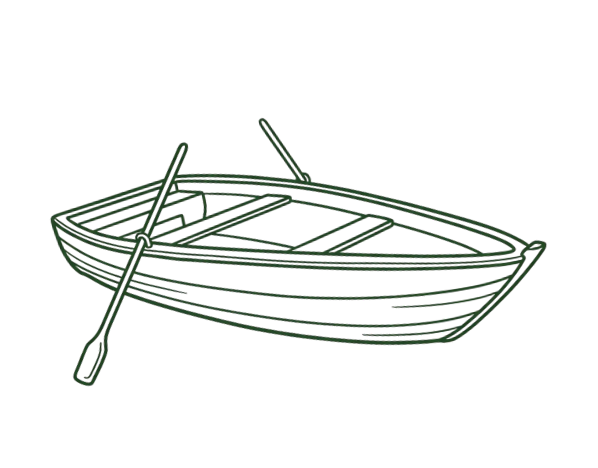
б.
изгиб
в.
внутренний просвет
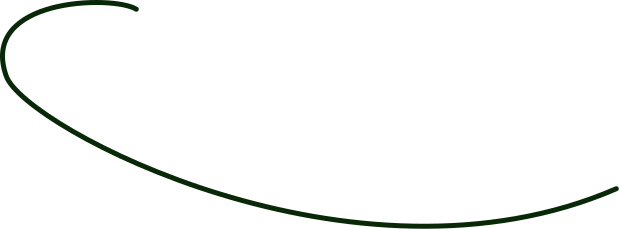
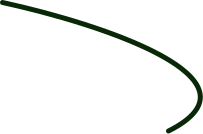
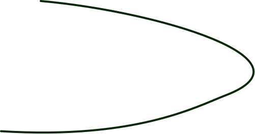
детали
место
р
я
д
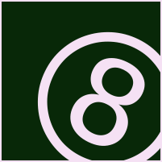
3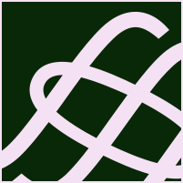
4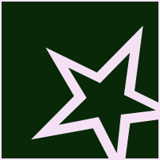
6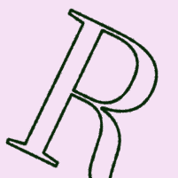
1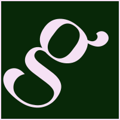
2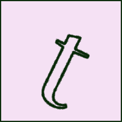
3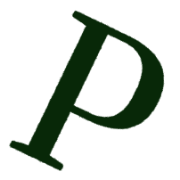
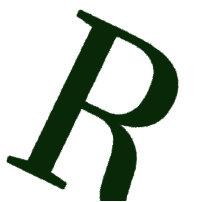
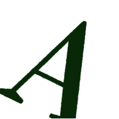
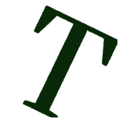
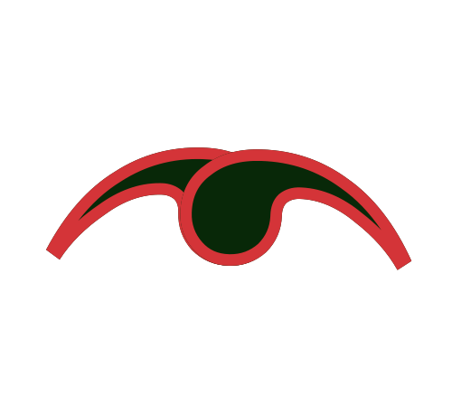
СЦЕНА I
Русский:
— Вы слышите? Кажется, кто-то идёт.
[после характерного хлопка дверь
медленно закрывается.]
=====================================
===============
English:
— Wait. Don’t turn around.
[пауза. за сценой слышится несколько
шагов.]
======================================
===============
Français:
— Il est déjà trop tard.
[cвет на мгновение гаснет.]
=====================================
===============
Italiano:
— Allora, cominciamo.
[она делает шаг вперёд и смотрит в зал.]
=====================================
===============
Español:
— Nadie sabe cómo terminará esta
historia.
[тишина. занавес начинает опускаться.]
—эксцентричный жонглёр в пышном фраке вышел
и сыграл роль юного князя перед строгим жюри.
НА СЦЕНУ